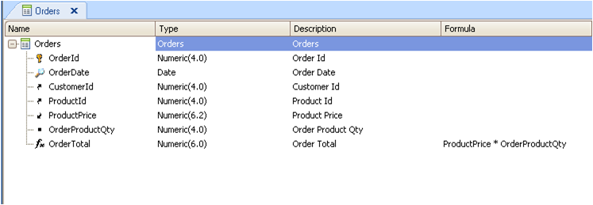

The aim is to expose a resource to be modified; for example to display the "Purchase Order" Business Component (henceforth the Orders entity) to insert and update data. The Orders entity encapsulates its business logic, which will be executed when accessing it as a REST service. This means that when the service is running, it will trigger the transaction business rules (formulas, business rules - without interface) and so on.  The steps to create a REST service on top of the "Orders" transaction is the following.
How to consume the Rest ServiceTo use the "Orders" Transaction as a REST service to insert data, you must invoke it using the HTTP POST method. To modify data, you must use HTTP PUT verb. In both cases, the body of the message should contain the same Business Component structure as it is returned when the GET method is executed. To use the service from GeneXus to insert purchase orders:
OrderSDT is an SDT with the same structure as the Orders transaction.
Note that &httpclient is a variable based on HttpClient data type. &OrderSDT variable is used to load the information data that will be posted to the Rest service. Note also that in the case of a POST, the PK needs to be specified as a parameter in the query string. Use JSON format instead of XML format.
&httpclient.Host = &server.Trim()
&httpclient.Port = &port
&httpclient.BaseUrl = &urlbase.Trim() //see HttpClient data type BASE URL property
&OrderSDT.CustomerId= &CustomerId
&OrderSDT.OrderDate= today()
&OrderSDT.ProductId= &ProductId
&OrderSDT.ProductPrice=&ProductPrice
&OrderSDT.OrderProductQty = &qty
&body=&OrderSDT.ToJson()
&httpclient.AddHeader('content-type','application/json')
&httpclient.AddString(&body)
&querystring='Orders' + "/" + &OrderId.ToString()
&httpclient.Execute('POST',&querystring)
if &httpclient.StatusCode=201
msg("Data successfully added")
else
msg("There was an error sending the data..")
endif
To use the service from GeneXus to update ordersYou must mimic the pseudo-conversational dialog used by GeneXus when using the Transaction. Get the data using HTTP GET verb and keep the MD5 hash associated to the data. To update a record you need to use the HTTP PUT verb with the whole Business Component structure in the body including the Hash value. The hash value is used for concurrency control. The body of the message should contain the structure of the Business Component as it comes when it makes an HTTP GET. Note Use the GeneXus HttpClient data type. See AlsoBusiness Components as Rest web services in GeneXus |